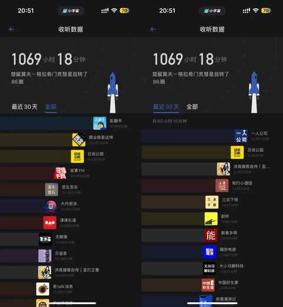
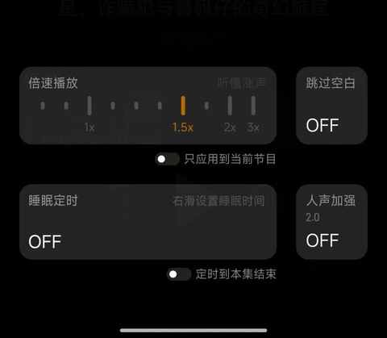
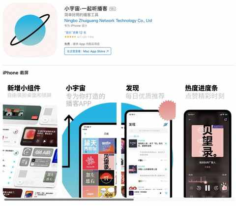
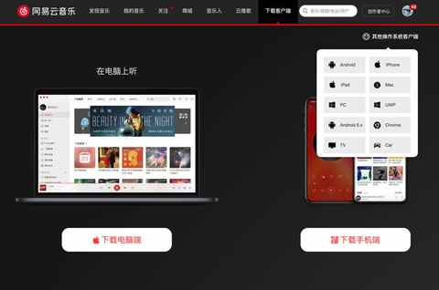

4 年累计收听超 1700 个小时之后，想大声说：去听播客吧！
大概是从 2019 年国庆后在朋友的建议下，开始听播客，自此听播客就成为了日常，两个账号的累计收听时长已超过1700 小时。
播客，绝对适合每一个人！


播客现在已经成为输入的主要方式之一，越来越多的热门事件也都能在播客收听到新鲜出炉的探讨。
1. 能用来听歌的场景，都能用来听播客
戴上耳机几乎是全场景适配，例如：通勤的时候、上班的时候、在运动时、做家务时……
2. 收听播客的时候，能同时做其他事情
当然啦每个人的情况不同，在尽量不影响主要事务进行的情况下收听即可，不同类型的内容也会有影响。
3. 信息的输入效率并不低
单期播客时长以 30-90 分钟为主，再结合可调整倍速播放，如果设置 1.3 倍左右，每天用 90 分钟的时间就能收听 1-3 期的内容

4. 内容丰富度超出你的想象
不少冷门的内容在播客都能找到专业且系统性的表达。
5. 无可替代的真人真声的陪伴感
现在不少读书类 app 都支持听书，但这个声音是 ai 生成的，虽然算法越来越好，人声模拟的越来越好，但始终听着是机器的声音，越听越能更知道读这段文字的不是真人。
播客就完全不同，大多数主播都有自己鲜明的特点，有各自的口头禅和语言特色，能通过音频和主播产生连接。
6. 有全场景适配的收听工具
手机端强烈建议使用小宇宙 app（安卓端 和 iOS 均有），里面仅有播客内容，每日都有优质内容推荐，收听方面的功能完善，评论区也很友好。

电脑上收听播客，可以用喜马拉雅（ximalaya.com），用浏览器打开喜马拉雅的网站去筛选节目即可收听。
和喜马拉雅一样，网易云音乐、QQ 音乐也都有播客（电台）频道，同时也都有电脑端可供使用。

7. 海量宝藏主播与嘉宾
刚开始吸引到我们可能是某个单集，通过这种方式不仅能发现相关的节目，还能发掘背后的主播以及与其对谈的嘉宾们，相较内容，探究内容背后的个体的各种分享同样能让人获益匪浅。